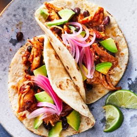

← All recipes
Pressure Cooker Chipotle-Honey Chicken Tacos

Servings: 4 servings ·
Ingredients
- 1 1/2 pounds boneless, skinless chicken thighs
- 1 to 4 canned chipotles in adobo, finely chopped, plus 2 tablespoons adobo sauce
- 3 tablespoons honey
- 1 teaspoon onion powder
- 1 teaspoon garlic powder
- 1 teaspoon kosher salt, plus additional as needed
- 1/2 teaspoon ground cumin
- 1 (15-ounce) can black beans, rinsed and drained
- 1 lime, juiced
- Warmed tortillas, for serving
- Pickled onion, for serving (see Tip)
- Sliced or cubed avocado, for serving
Directions
- Combine the chicken, chipotles and adobo sauce, honey, onion powder, garlic powder, salt and cumin in an electric pressure cooker. Stir well. Cover and set steam valve to sealed position. Cook on high pressure for 13 minutes. Let the pressure release naturally for 5 minutes; then release the remaining pressure manually. Open the lid.
- Remove the chicken to a bowl or cutting board using tongs. Shred the chicken with two forks. If you’d like to reduce the sauce, set to sauté and simmer, 5 minutes. Add the chicken back into the pot.
- Stir in the black beans and a squeeze of lime juice, set to sauté and let the beans warm through, 2 to 3 minutes. Taste and add more salt or lime juice if necessary. Serve in tortillas with pickled onions and avocado.
Notes
To make quick-pickled onions, thinly slice a red onion and put the slices in a lidded heat-proof container. Bring about 1½ cups cider or white vinegar to a boil. Add about 3 heaping spoonfuls of sugar and a big pinch of salt and whisk to dissolve. (You can also add a pinch of red-pepper flakes, a bay leaf or some dried oregano, if you like.) Pour the hot vinegar over the onions and let them cool. They’re ready to use right away, or can be stored in the refrigerator for up to 2 weeks.
Original source: cooking.nytimes.com